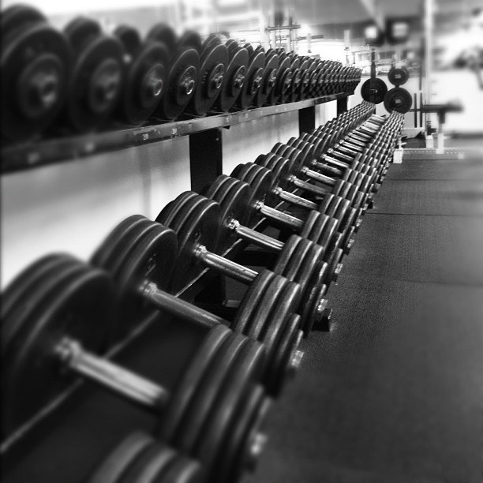

Mis Pasatiempos
Cada año me ha dado diferentes pasatiempos, o más bien, rutinas diarias acorde a mi tiempo durante los días y en mis gustos, haciendo que deje de hacer ciertas actividades para retomar otras repentinamente. Mis pasatiempos de este año son pocos pero suficientes para mí, son con los que me siento cómodo en hacer por voluntad propia y satisfecho productivamente.
• Pasear a mi perrita
Me gusta salir a correr o dar una simple caminata junto con mi perrita (Mily) al parque por las mañanas, me hace sentir y empezar el día relajado con las energías al 100% listo para realizar cualquier otra actividad durante el día.
• Hacer ejercicio
Hacer ejecicio es uno de los pasatiempos que más le tomé cariño desde que empecé a cuidar aún más de mi físico, me siento mucho mejor conmigo mismo después de un buen entrenamiento al igual que mi seguridad, pero sobre todo, me siento productivo por mejorar en mí.
• Leer

Sinceramente, no suelo leer diariamente libros o páginas en específico cuyos temas sean científico, ficción, novela, motivacional, etc; más bien, leo artículos de mi interés. Si me llamó la atención cierto tema que oí en algún lugar o un tema en el cual simplemente quisiera conocer, me propongo a leerlo hasta saber de ello.
• Andar en bicicleta
Este es uno de mis pasatiempos favoritos que he descubierto en este año. Me gusta a dar un paseo por toda mi colonia e incluso irme más lejos en mi bici por las mañanas o por las tardes casi anochecer, me hace sentir libre y lleno de energía después de un día aburrido o cansado.

• Aprender un poco de programación

Ahora que estoy en una carrera universitaria que trata del desarrollo de Software, es indispensable prácticar la lógica y saber técnicas para manejar un lenguaje de programación o más para ser un buen desarrollador de Software.Por el momento estoy practicando Phyton.
• Jugar videojuegos
No hay nada más que decir, amo los videojuegos.Este pasatiempo se implementó en mi ADN mientras yo me desarrollaba dentro de mi mamá.